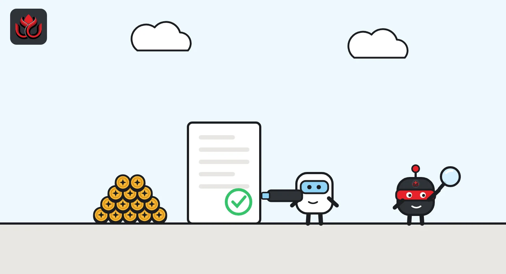
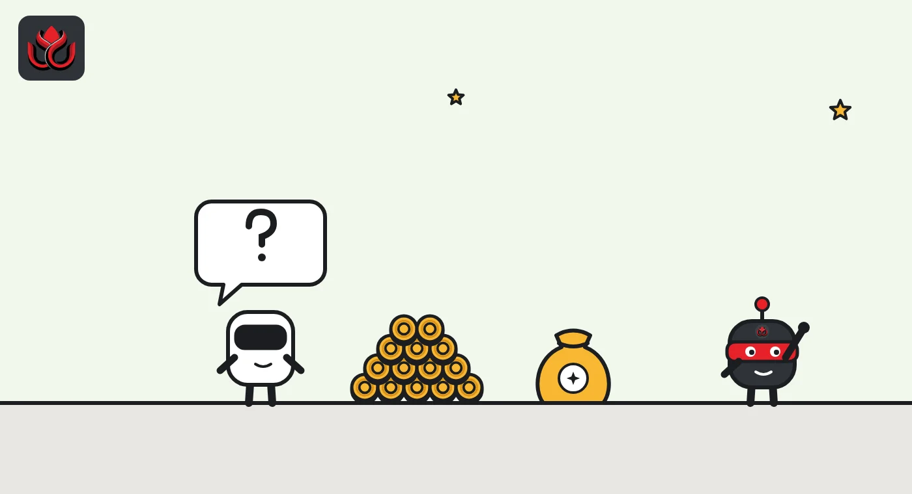

Tokenized gilts as margin? The Bank of England says yes; stablecoins must wait
The Bank of England says clearinghouses can already accept tokenized versions of collateral they take today, and set out what they must check first. Stablecoins, tokenized money funds and tokenized gold get questions, not approval.
Key points
- The Bank of England published a consultation on October 29, 2026, on how UK clearinghouses should assess tokenized collateral. It closes on February 12, 2027.
- The Bank's view is that current rules do not stop clearinghouses from taking tokenized forms of collateral they already accept, such as government bonds. No new regime is proposed.
- Stablecoins, tokenized money market funds and tokenized gold stay outside the eligible list for now. The Bank asks for views on them.
What the Bank proposed
The Bank of England published a consultation on October 29, 2026, setting out what it expects from central counterparties (CCPs) that want to accept tokenized collateral. A CCP, or clearinghouse, stands between the two sides of a trade and collects collateral, called margin, so that one firm's default does not spread. Tokenized collateral means assets such as government bonds recorded as tokens on a blockchain or similar ledger.
The Bank's starting point is that its existing framework already allows CCPs to take tokenized forms of collateral that are eligible today. The draft supervisory statement does not add new obligations. It explains which token-specific risks a CCP should weigh when it uses the normal approval process for new collateral. Tokenized government bonds are the main example. Comments are due by February 12, 2027.
What clearing houses must check
The Bank says its expectations are not pass-or-fail tests. CCPs should weigh all relevant factors and show how they reached a decision. The main areas:
- Liquidity and valuation: a CCP should not assume a token is as liquid as the bond it represents. It should check that it can sell or transfer the token in time, in normal and stressed markets, and how the token's price tracks the underlying asset.
- Credit and concentration: if a private company tokenizes a government bond, the CCP should check whether its claim is still only on the government or also on the tokenizer, platform or custodian.
- Settlement finality: where both a ledger and a central securities depository keep records, the CCP must know which record decides ownership and when a transfer is final.
- Operational resilience: CCPs should map dependencies such as smart contracts, bridges and third-party changes to the ledger, and stay responsible for anything they outsource.
- Custody and keys: CCPs should plan for a custodian failing and for lost or compromised cryptographic keys, and check wallets and smart contracts for weaknesses.

Stablecoins, tokenized funds and gold
The consultation proposes no change to which assets are eligible. On stablecoins, the Bank is direct: "Stablecoins may not currently be accepted by CCPs as highly liquid collateral." Accepting them would need a rulebook change or a specific permission from the Bank. It asks for views on regulated stablecoins all the same.
Tokenized money market funds also stay out for now. The Bank asks about barriers to redemption, the risk that margin calls amplify market swings, and links to assets backed by public debt. On tokenized gold, it warns that a token that breaks the link to allocated bullion may stop counting as gold and be treated as a financial instrument instead.
The caution on stablecoins fits the Bank's wider approach. Under its plan for systemic sterling stablecoins, published with the FCA in June, the Bank proposed a temporary cap of 40 billion pounds of issuance per systemic stablecoin, the joint approach paper says.
Public blockchains and the digital gilt
The paper does not pick a technology. It does note that the Bank's wholesale settlement DLT Innovation Challenge raised issues with public permissionless ledgers, such as settlement finality that is only probable and governance that relies on processes outside the chain.
The supply of tokenized assets is also growing. The Bank points to DIGIT, the UK's planned digital gilt, as a possible source of high-quality tokenized collateral. HM Treasury said on October 6 that the DIGIT pilot will be issued on HSBC's Orion platform in the Digital Securities Sandbox, with the issuance due in the first quarter of 2027. In the meantime, the Bank says it may use permissions to accept tokenized securities held at a Digital Securities Depository or with a regulated custodian.

Who it applies to and what comes next
The draft applies directly to UK CCPs and to non-UK CCPs that the Bank has found to be, or likely to become, systemically important to the UK. The Bank also wants to hear from clearing members, their clients and trade groups.
It asks five questions, from the most useful cases for tokenized collateral to the risks of stablecoins and tokenized funds. A future power under section 138BA of the Financial Services and Markets Act will let CCPs seek permission to change the rulebook for new forms of collateral once it is in force.
LC Insight analysis
This section is our reading of the facts above, not a statement of fact.
- We think the headline is the green light, not the caution. By saying current rules already allow tokenized versions of eligible collateral, the Bank removes a reason for clearinghouses to wait, and DIGIT gives them a first asset to test.
- Stablecoins remain the open question. The Bank treats them as payment tools first and collateral second, and we expect it to move slowly until its systemic stablecoin regime is final.
- The custody and key-loss section reads like a list of past crypto failures. The likely result is that CCPs will favor regulated custodians and permissioned setups at first, even though the paper is technology neutral.
What's next
- Responses before the February 12, 2027, deadline, especially on stablecoins and tokenized money market funds
- The DIGIT pilot issuance planned for the first quarter of 2027
- The Bank's final code of practice for systemic stablecoins, expected by the end of 2026
Disclaimer. This article is based on public information and the sources listed below as of the update time shown. It is for information only and is not investment, legal or tax advice. Figures may change as companies and authorities publish new data.
Sources
- Bank of England, Consultation on supervisory expectations for CCPs seeking to accept tokenised collateral (October 29, 2026)
- Bank of England and FCA, Approach to joint regulation of systemic stablecoin issuers (June 30, 2026)
- HM Treasury, Economic Secretary speech for UK Digital Assets Week (October 6, 2026)